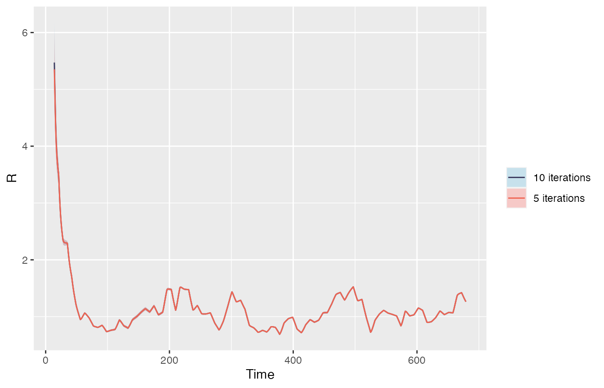

vignettes/EpiEstim_aggregated_data.Rmd
EpiEstim_aggregated_data.RmdThe EpiEstim package has been extended to allow users to estimate the time varying reproduction number (Rt) from temporally aggregated incidence data (Nash et al.). This approach reconstructs daily incidence from data supplied at any timescale. This vignette will take you through the different ways aggregated incidence data can be supplied, the additional parameters needed, and an example using aggregated UK COVID-19 data. Please also see the FAQs section.
Incidence data
Many diseases are not reported on a daily basis. EpiEstim can now use incidence data that has been aggregated in multiple ways, e.g.:
Daily incidence data is reconstructed from aggregated data using an expectation-maximisation (EM) algorithm. There are three stages of the EM algorithm:
The daily incidence that is reconstructed after the final iteration of the EM algorithm is then used to estimate Rt using the same process as the original estimate_R() function, with sliding weekly time windows used as the default.
Aggregation windows
Aggregation windows can be specified using the parameter dt, and can be provided in one of three ways:
dt = 7L for weekly datadt = c(2L,2L,3L)
Serial interval distribution
The serial interval can be provided on a daily timescale (as usual), either as the mean and standard deviation (parametric distribution) or the full distribution (non-parametric distribution). See ‘full_EpiEstim_vignette’ for more details.
To estimate Rt from temporally aggregated incidence data, we simply use the estimate_R() function with two additional parameters required, dt and dt_out, and two optional parameters, iter and grid.
estimate_R() for aggregated data
estimate_R(incid = aggregated_incidence,
dt = 7L,
dt_out = 7L,
iter = 10L,
grid = list(precision = 0.001, min = -1, max = 1),
config = config,
method = method)As described above, dt can be supplied as a single integer, a vector of repeating integers, or a full vector of integers matching the length of the incidence data.
dt_out is the length of the sliding windows used to estimate Rt from the reconstructed daily incidence data, this is dt = 7L (weekly sliding windows) by default. We recommend that dt_out is at least equal to the length of the longest aggregation window (dt) in the data.
There are two optional parameters that can be modified, however, we recommend that the default values are used:
iter is the number of iterations of the EM algorithm used to reconstruct the daily data. This is iter = 10L by default.
grid is a list of “precision”, “min”, and “max” values to define a grid of growth rate parameters used inside the EM algorithm. The grid is used to convert reproduction number estimates for each aggregation of incidence data into growth rates, which are then used to reconstruct the daily incidence data assuming exponential growth. The grid will auto-adjust if it is not large enough, so we recommend using the default values.
The SI distibution can be specified as normal using the method and config parameters (see the full_EpiEstim_vignette for more details).
This example will take you through a workflow using weekly incidence data for UK COVID-19 cases. (For detailed description of the data see Nash et al.)
incid <- readRDS("./aggregated_data/UK_covid_cases.rds")Incidence
Let us say we have a vector of weekly incidence data for COVID-19 cases.
incid
#> [1] 21 241 1503 4714 14294 27408 33124 30126 33288
#> [10] 31944 25581 20435 17320 12195 9259 7102 6948 5596
#> [19] 4376 4258 4287 4704 5507 5964 7408 7500 8244
#> [28] 13823 22060 23924 41711 66725 106925 116472 146015 150832
#> [37] 159310 172001 146202 107282 102508 128194 202680 260353 352685
#> [46] 397790 316549 250624 175157 133220 94886 79373 63185 41334
#> [55] 38741 37560 37213 27387 19128 16934 16182 14287 13422
#> [64] 14743 15882 20430 30671 46961 62642 97320 163612 214681
#> [73] 294984 279099 187392 186748 198318 225124 239123 249063 251378
#> [82] 199736 235620 234391 244202 292109 326688 280646 255388 253735
#> [91] 287826 295546 322535 345941 525261 800717 1034989We need to specify how the data is aggregated, which in this case, is by constant weekly aggregation windows. We do this by supplying dt with a single integer (7L).
dt <- 7LWe can take an estimate from the literature to specify a parametric SI with a mean of 6.3 days and a standard deviation of 4.2 days (Bi et al 2020).
mean_si <- 6.3
std_si <- 4.2
method <- "parametric_si"
config <- make_config(list(mean_si = mean_si,
std_si = std_si))Estimate Rt
Now that we have our aggregated incidence, our aggregation time window, and SI distribution, we can supply these to the estimate_R() function. We do not need to specify dt_out, iter or grid because we are going to use the default values.
output <- EpiEstim::estimate_R(incid = incid,
dt = dt,
method = method,
config = config)The output consists of multiple elements, including the reconstructed daily incidence data:
head(output$I)
#> [1] 3 3 3 3 3 3And the Rt estimates (in this case, using the default weekly sliding windows):
head(output$R)
#> t_start t_end Mean(R) Std(R) Quantile.0.025(R) Quantile.0.05(R)
#> 1 8 14 5.472053 0.3517569 4.804283 4.906602
#> 2 9 15 4.940857 0.2770256 4.412755 4.494190
#> 3 10 16 4.440229 0.2176621 4.023813 4.088375
#> 4 11 17 4.095384 0.1758868 3.757861 3.810433
#> 5 12 18 3.865754 0.1457340 3.585360 3.629207
#> 6 13 19 3.708135 0.1229331 3.471074 3.508271
#> Quantile.0.25(R) Median(R) Quantile.0.75(R) Quantile.0.95(R)
#> 1 5.230868 5.464518 5.705025 6.063209
#> 2 4.751292 4.935681 5.124780 5.405182
#> 3 4.291544 4.436673 4.585038 4.804214
#> 4 3.975417 4.092866 4.212605 4.388922
#> 5 3.766486 3.863923 3.963027 4.108548
#> 6 3.624494 3.706777 3.790295 3.912632
#> Quantile.0.975(R)
#> 1 6.182645
#> 2 5.498376
#> 3 4.876853
#> 4 4.447213
#> 5 4.156555
#> 6 3.952916In this example, you will notice that Rt estimation does not start until day 8. This is because the daily incidence data cannot be reconstructed, and Rt estimation cannot start, until the first day of the second aggregation window. The start of Rt estimation may also be delayed if incidence is too low, but this was not the case here.
Plot results
As normal, simply plot the full or partial output.
plot(output) # full output
plot(output, "incid") # Reconstructed daily incidence only
plot(output, "R") # Rt estimates only
plot(output, "SI") # SI estimates onlyCheck convergence
You can also check convergence by modifying iter= and comparing the results to check for large discrepancies.
output_5iter <- EpiEstim::estimate_R(incid = incid,
dt = dt,
iter = 5L,
method = method,
config = config)
iter_diff <- rbind(output$R, output_5iter$R)
nR <- nrow(output$R)
iter_diff$iter <- c(rep("10 iterations",nR), rep("5 iterations",nR))
ggplot(iter_diff, aes(t_end, `Mean(R)`,group=iter,col=iter)) +
scale_colour_manual(values=c("#3c3b5f","#f06553"), name="")+
geom_ribbon(aes(ymin = `Quantile.0.025(R)`, ymax=`Quantile.0.975(R)`,
fill=iter_diff$iter), col=NA, alpha=0.3)+
scale_fill_manual(values=c("#60B7DE","#ff6961"), name="")+
geom_line() +
ylab("R")+
xlab("Time")
In order to reconstruct daily incidence data, the method requires that Rt is estimated for each aggregation window in turn, which is translated into a growth rate and used to reconstruct daily incidence assuming exponential growth. As there is no past incidence data beyond the first aggregation window, Rt cannot be estimated and the daily incidence cannot be reconstructed until the first day of the second aggregation window.
Additionally, Rt estimation will not start until case numbers are sufficiently high.
Please also see the FAQ section in “full_EpiEstim_vignette”.
Nash RK, Cori A, Nouvellet P. Estimating the epidemic reproduction number from temporally aggregated incidence data: a statistical modelling approach and software tool. medRxiv pre-print.
Bi Q, et al. Epidemiology and transmission of COVID-19 in 391 cases and 1286 of their close contacts in Shenzhen, China: a retrospective cohort study. Lancet. 2020.
Wallinga J, Lipsitch M. How generation intervals shape the relationship between growth rates and reproductive numbers. Proceedings of the Royal Society B: Biological Sciences. 2007 Feb 22;274(1609):599–604.